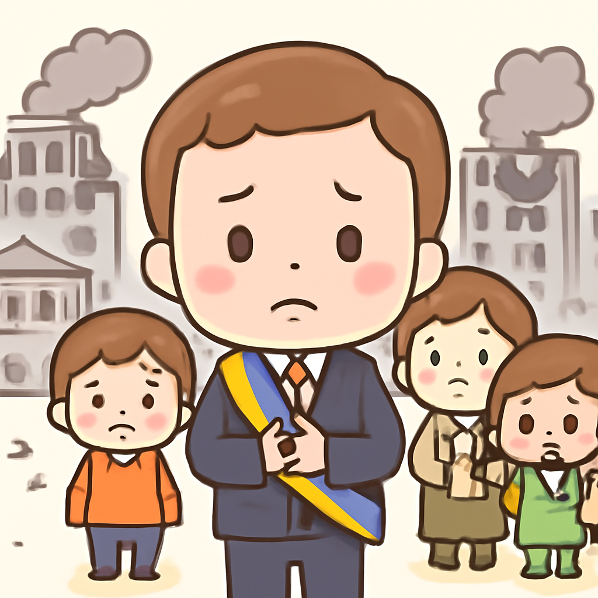
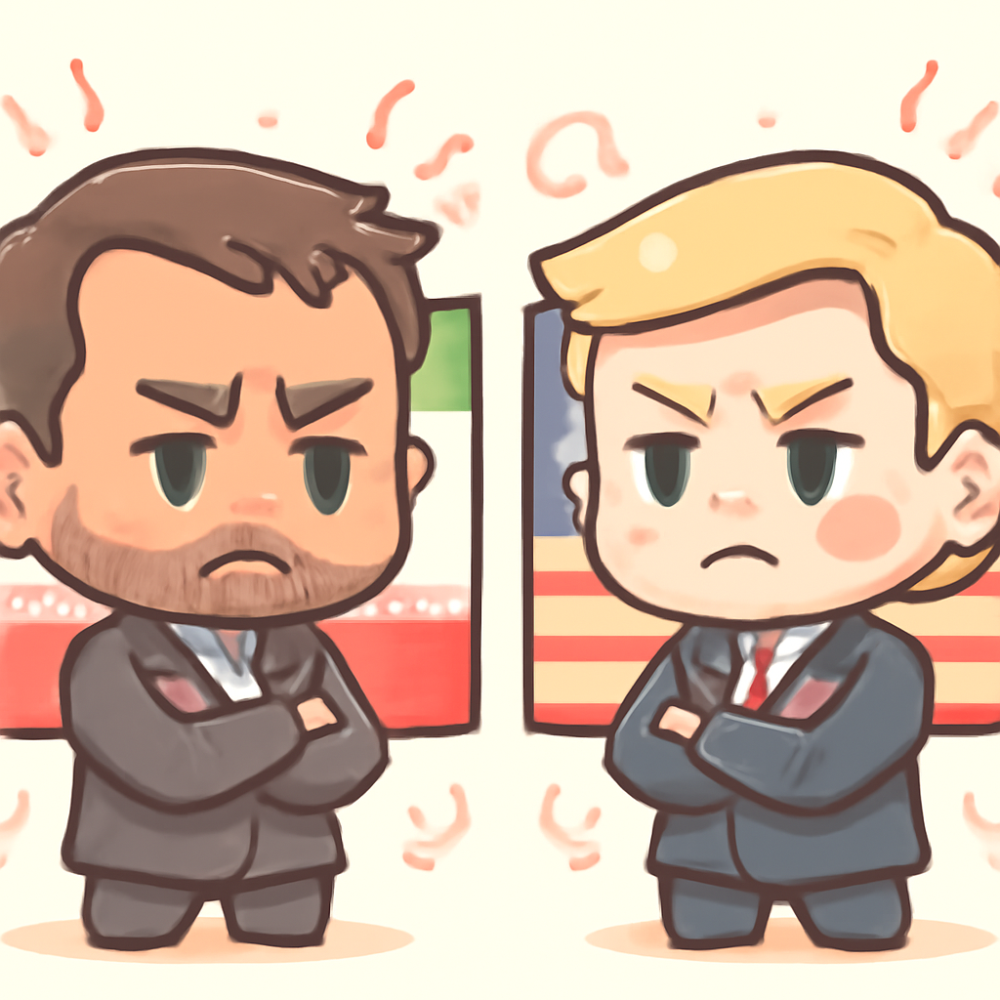
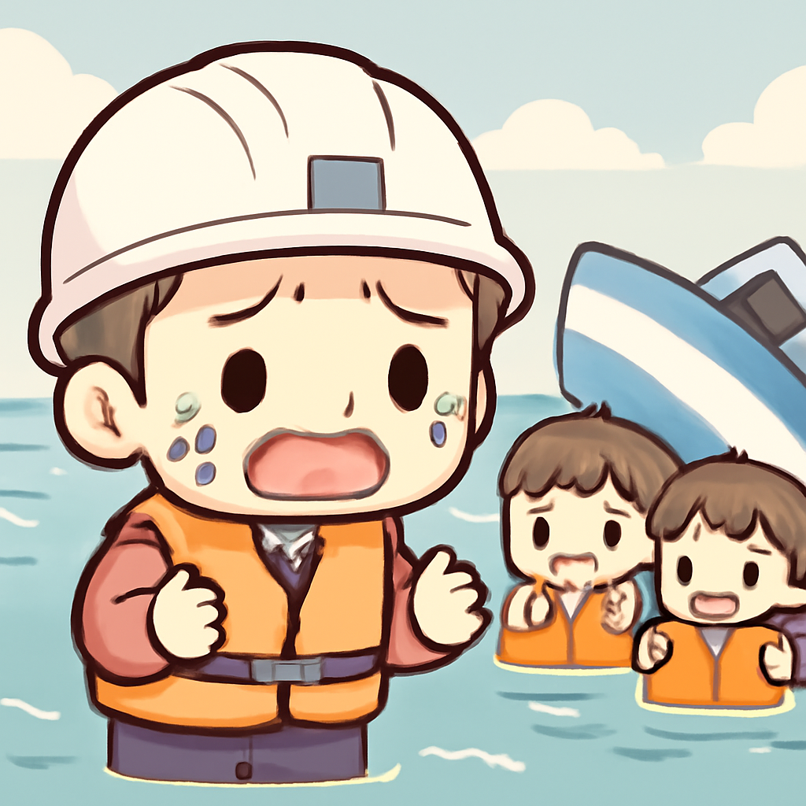
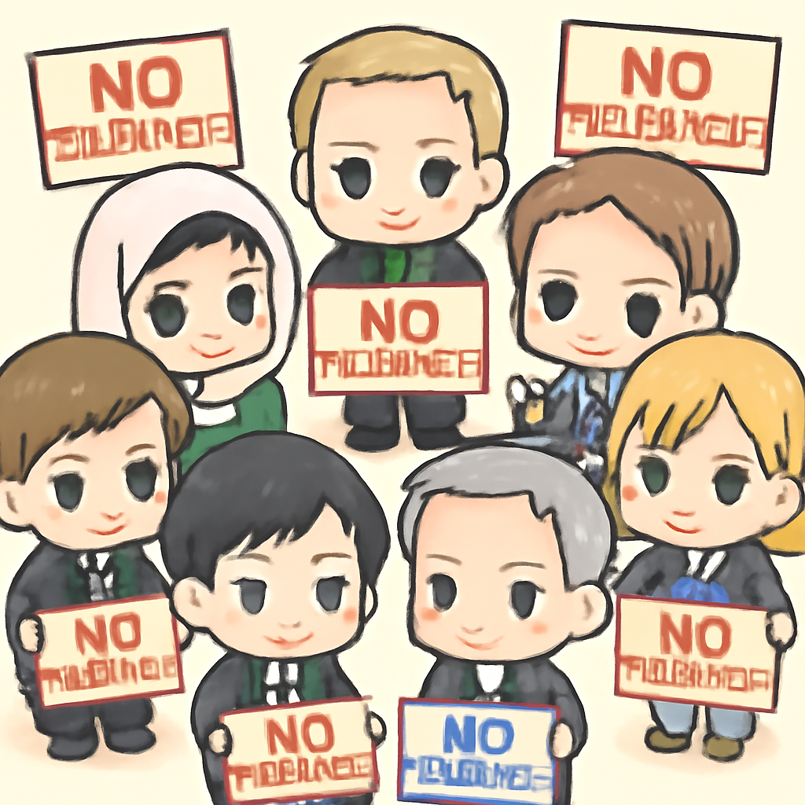

其一 · 烏克蘭基輔 · 俄羅斯對基輔發動襲擊
基輔遭俄羅斯大規模襲擊，造成17人死亡

在烏克蘭基輔，俄羅斯於夜間發動大規模襲擊，造成至少17人喪生。基輔市長克利奇科表示，這次攻擊不僅人員傷亡嚴重，還影響到熱水供應。這樣的行動顯示出俄方對局勢的強硬態度，而烏克蘭的平民生活也因此再度受到威脅。哎，真希望這場戰爭能儘早結束，讓大家都能好好泡個熱水澡。
🔗 原始新聞 ↗
2026-08-21 · 以古觀今，以笑抗愁
基輔遭俄羅斯大規模襲擊，造成17人死亡

在烏克蘭基輔，俄羅斯於夜間發動大規模襲擊，造成至少17人喪生。基輔市長克利奇科表示，這次攻擊不僅人員傷亡嚴重，還影響到熱水供應。這樣的行動顯示出俄方對局勢的強硬態度，而烏克蘭的平民生活也因此再度受到威脅。哎，真希望這場戰爭能儘早結束，讓大家都能好好泡個熱水澡。
🔗 原始新聞 ↗
恒大創辦人被判無期，影響中國經濟
中國恒大集團的創辦人許家印近日被判無期徒刑，這一判決標誌著其擴張失敗的終點，也讓中國的房地產市場再度受到衝擊。隨著其商業帝國的崩潰，許多投資者和購房者都受到影響，經濟前景變得更加不明朗。看來，這場房地產的陣痛不會那麼快就結束。
🔗 原始新聞 ↗
美國與伊朗持續僵持，無人願意讓步

美國與伊朗的緊張關係依然持續，雙方都認為自己能撐得更久，卻沒有任何進展。這種僵持狀態使得局勢更加不穩定，讓觀察者擔心是否會爆發更大規模的衝突。國際社會對這種情況感到擔憂，大家都在想：到底誰會先妥協呢？
🔗 原始新聞 ↗
尼日利亞船隻翻覆，許多孩童遇難

在尼日利亞西北部的索科托州，一艘船隻不幸翻覆，造成多名乘客遇難，據報導其中許多是孩童。這起悲劇凸顯了該地區船隻安全的嚴重問題，官方呼籲加強監管以防止類似事件再次發生。每一次悲劇都是一個提醒，我們需要更好地保護生命。
🔗 原始新聞 ↗
英法德等國譴責以色列擴建定居點計劃

英國、法國、德國、義大利及加拿大等主要國家對以色列在西岸擴建定居點的計劃表示譴責，認為這對地區穩定造成威脅。此舉反映了國際社會對以色列政策的不滿，並可能促使未來的外交行動。希望各方都能坐下來好好聊聊，而不是只在推特上互罵。
🔗 原始新聞 ↗